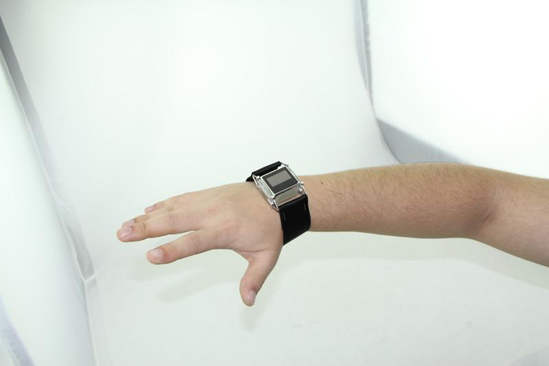

| |
本条目需按重新排版、编写
|
Xadow is a set of kits which contains several modules, such as Xadow Main Board, Xadow LED, Xadow OLED, Xadow BLE Slave and Xadow barometer etc. It is sensitive and smart, and easy to cascade connection with fine-augmentability. These modules’ features of portability, flexible cascade connection make it suited to such occasions in which have higher request on size and weight. For instance, in wearable equipment and art design. We have used Xadow kits to design a few sets of wearable devices. It is possible that a better design will occur in your mind when you hold the Xadow.
Xadow modules cascades with Each other with FFC cables. All the modules share the same bus includes IIC, SPI, UART and digital&analog Pins. The table below shows the communication details between Xadow modules with the Xadow mainboard:
| Xadow Modules | Control Mode | P1 | P2 | P3 | P4 | P5 | P6 | P7 | P8 |
|---|---|---|---|---|---|---|---|---|---|
| Xadow - 3-Axis Accelerometer | IIC | IIC Address is 0x53 | |||||||
| Xadow - BaroMeter | IIC | IIC Address is 0x77 | |||||||
| Xadow - BLE Slave | Serial | RX/TX | |||||||
| Xadow - Breakout | |||||||||
| Xadow - LED Controller | IIC | IIC Address is 0x04 | |||||||
| Xadow - OLED | IIC | IIC Address is 0x3C | |||||||
| Xadow - Vibration Motor | Digital Signal | H | H | ||||||
| Xadow - RTC | IIC | IIC Address is 0x68 | |||||||
| Xadow - Buzzer | Digital Signal | H | H | ||||||
| Xadow - Digital Compass | IIC | IIC Address is 0x1E | |||||||
| Xadow - Motor | TBD | ||||||||
| Xadow - GPS | Serial | RX/TX | |||||||
| Xadow - Storage | IIC | IIC Address are 0x50 and 0x51 | |||||||
| Xadow - NFC | IIC | IIC Address is 0x24 | |||||||
Reference page for all Xadow IO pin mapping information including:-
|
Xadow tutorial-Acceleration detector
|
 |
|
Xadow tutorial-Communicate via BLE
|
|
|
Xadow tutorial-shaking shaking
|
|
Put the OLED module、Xadow Main Board、Xadow RTC on the inside of the shell. Designed to be a personalized electronic watch.

It can be worn on the arm with a belt.

You can also use a string to wear on the chest:
About the Xadow Metal Frame, click here to see more detail information.
Place Xadow Main Board, Xadow barometer, Xadow BLE Slave or others inside the shell and put it on your shirt pocket, it can always view the current air pressure, height, or the vibration motor vibrates to remind you when the phone receives a twitter message.
Put Xadow to the packaging which is very suitable, but also can be easily bent. By your imagination, the packaging can do ....

In fact, we have more structures for you to refer, enjoy!
Demo1 acceleDetectoe Code
Demo2 SMILE Code
Demo3 BLESlave Code
sleep_FromArduino
DigitalAccelerometer_ADX345
the library:OLED_Display12864